外部の例#
PyVistaができることの，より長い，より技術的な例のリストを以下に示します!
注意
これらの例は外部のWebサイトにリンクしています．これらのリンクのいずれかが壊れている場合は，リポジトリでissueを提起してください．
共有したいテクニカルプロセッシングワークフローまたはビジュアリゼーションルーチンがありますか?もしそうなら，あなたの作品をここでシェアして， https://github.com/pyvista でPRを提出することを検討してください．喜んで追加します!
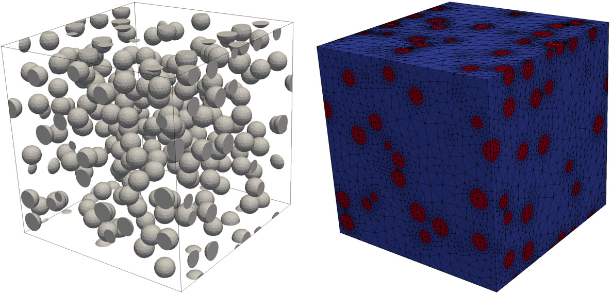
GmshModel#
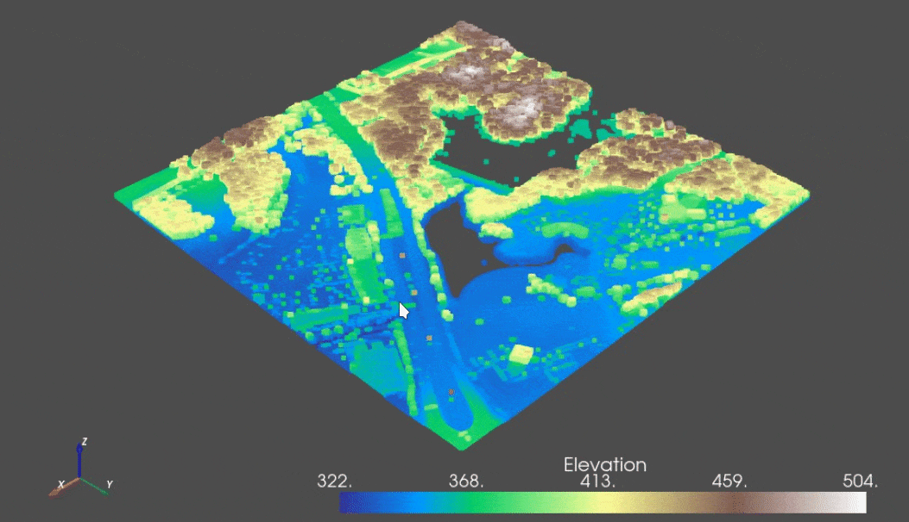
geemap#
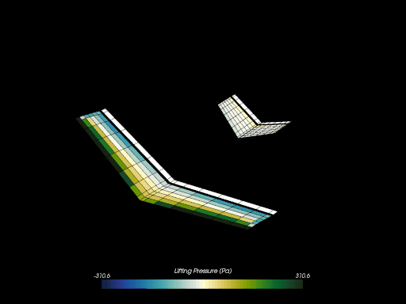
PteraSoftware#
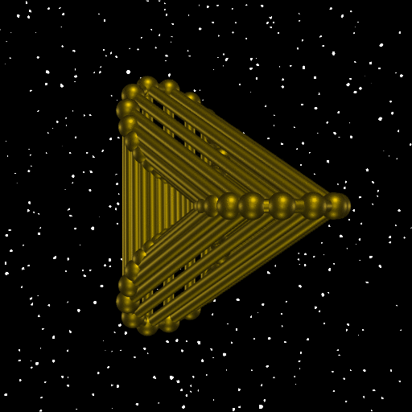
Stéphane Laurent's artwork#
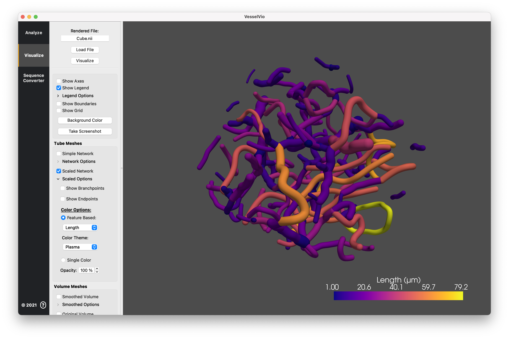
VesselVio#
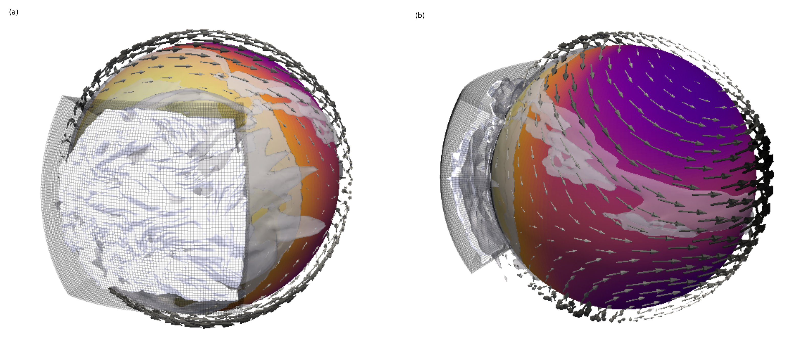
大気対流#

Damavand火山#
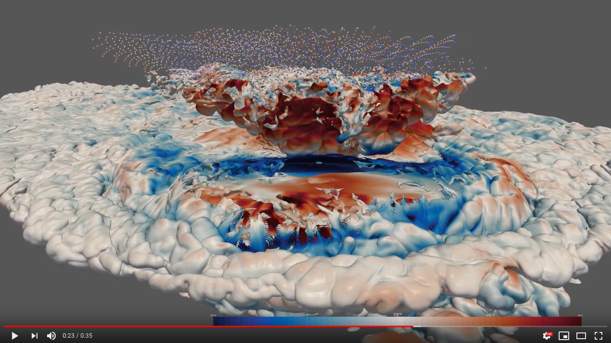
Anvil Cirrus Plumes#
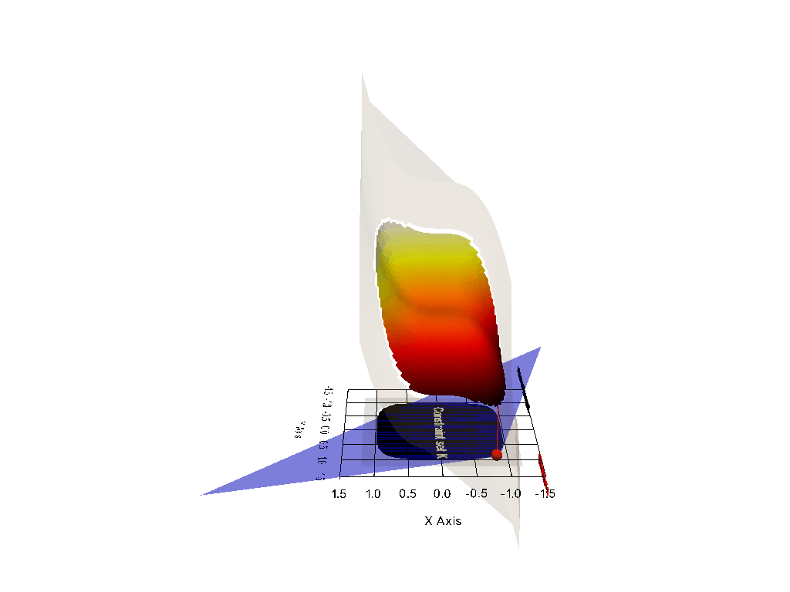
PyVistaによる視覚化の最適化#
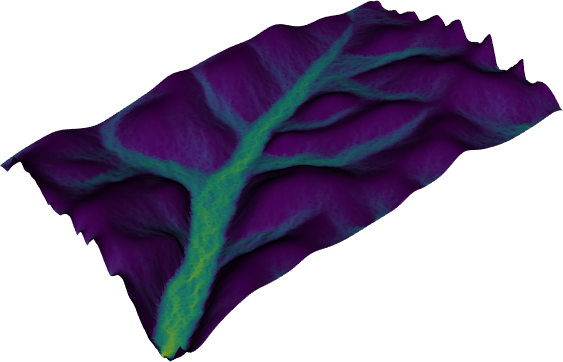
FLEM: 拡散的景観進化モデル#
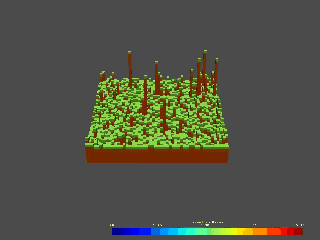
Orvisuデモアプリケーション#
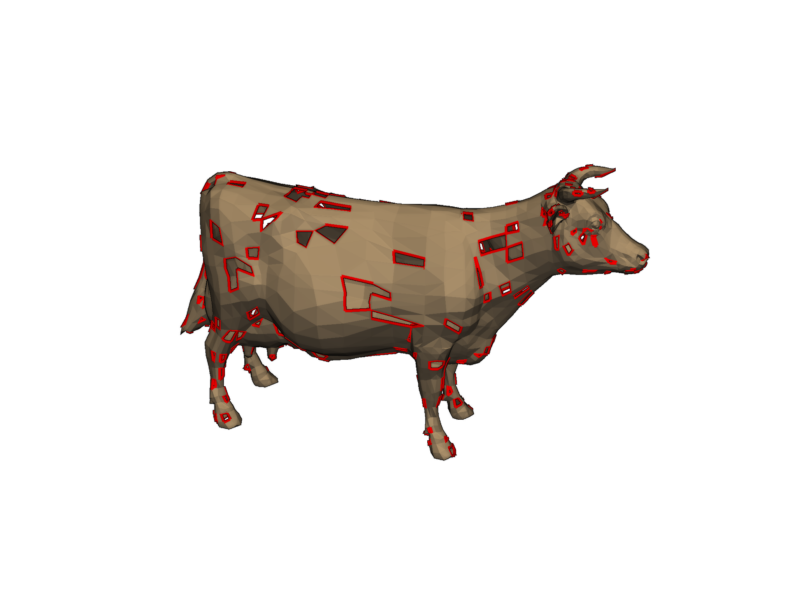
PyMeshFixのサンプルギャラリー#
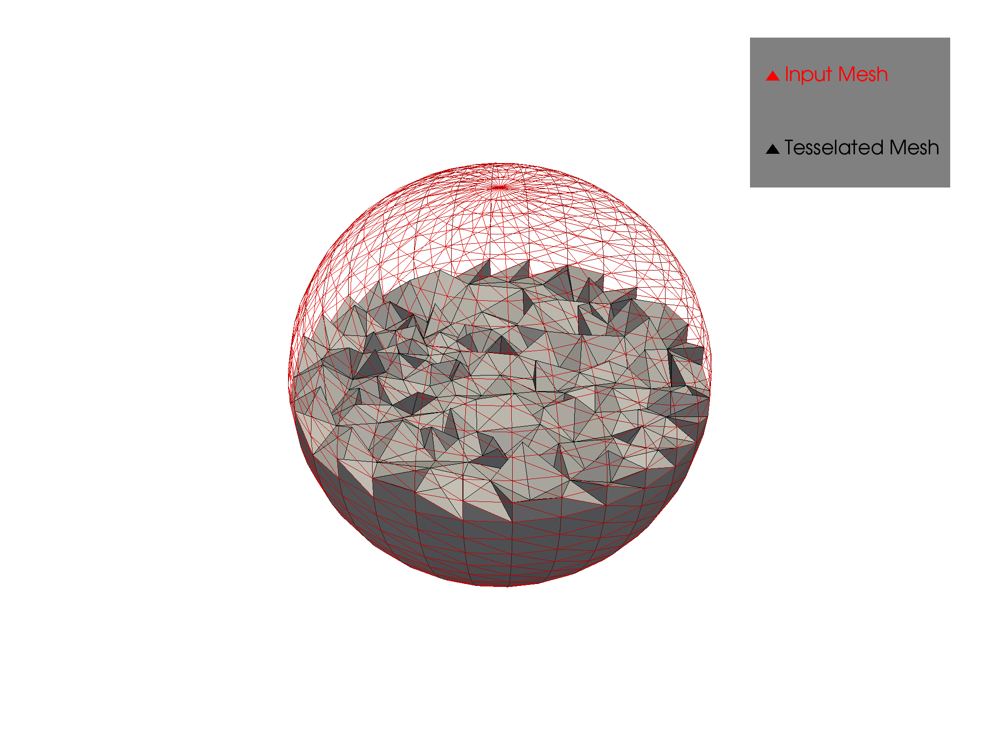
TetGenのサンプルギャラリー#
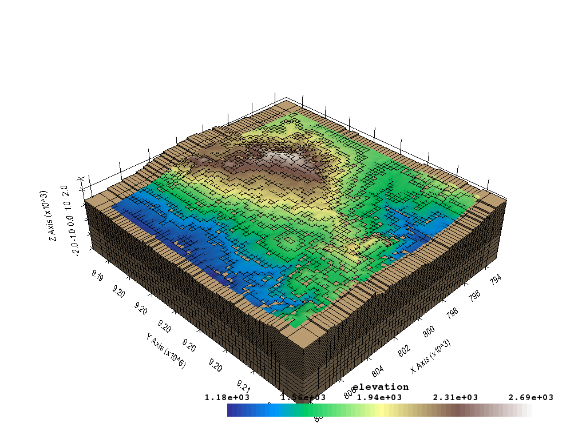
PVGeoのサンプルギャラリー#
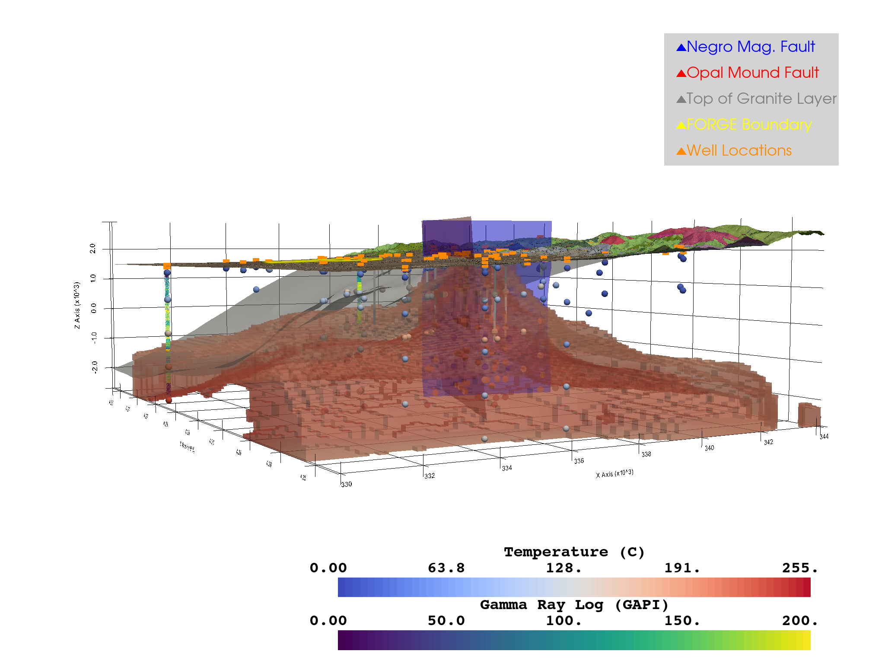
FORGE地熱プロジェクト#
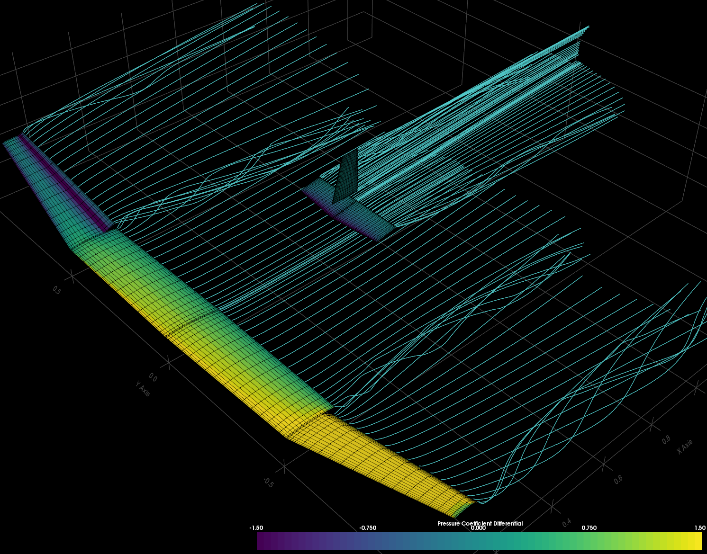
エアロサンドボックス#
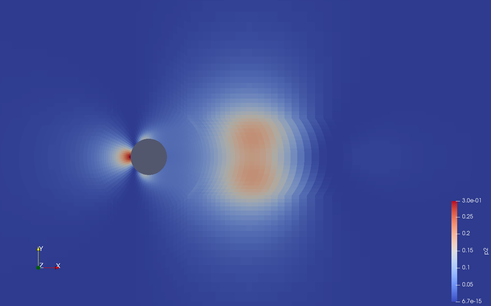
OpenFOAMレンダリング#
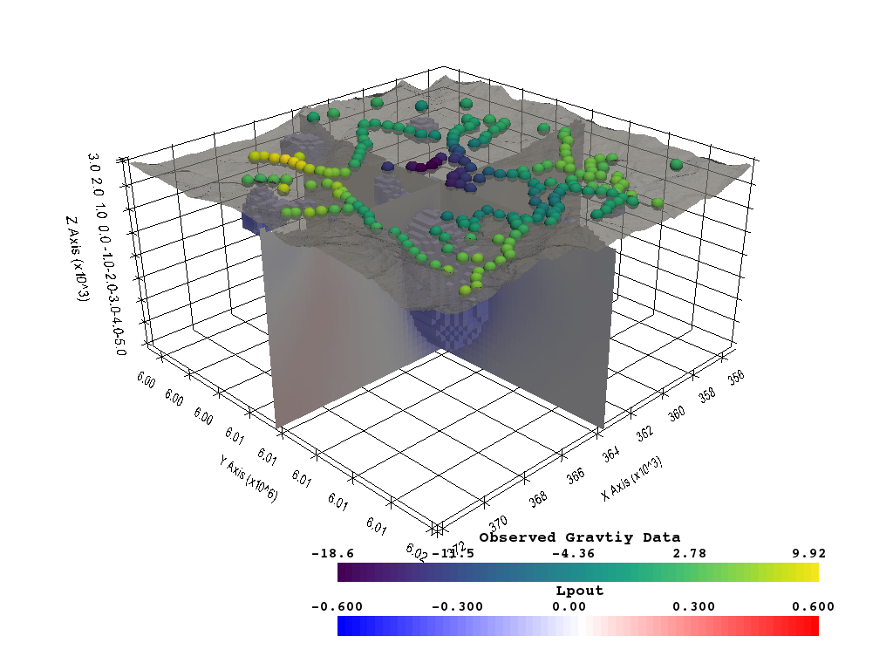
離散化を使用した3 Dレンダリング#
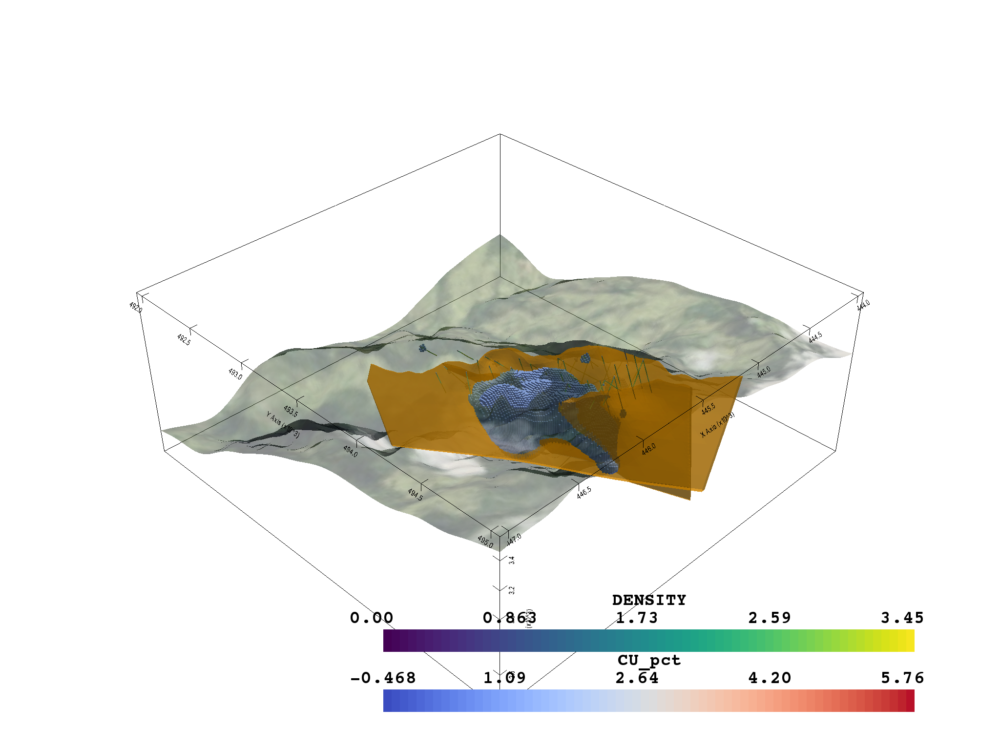
Open Mining Format (omf) の3 D表示#